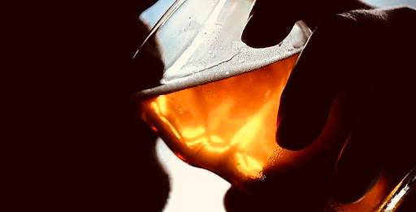

+380(97) 369 76
65
+380(97) 369 76
65Лечение пивного алкоголизма Umbrella PLus
Лечение пивного алкоголизма - мы знаем проблему наизусть
Работаем в Одессе, Киеве, Львове, Харькове, Днепре, Запорожье, Черноморске, Каменском


Бесплатная консультация, работаем круглосуточно 24/7
Лечение пивного алкоголизма - мы знаем проблему наизусть
Работаем в Одессе, Киеве, Львове, Харькове, Днепре, Запорожье, Черноморске, Каменском
Пивной алкоголизм - это постоянно прогрессирующая наркологическая болезнь вызванная чрезмерным и частым употреблением пива. Пивной алкоголизм является разновидностью алкогольной зависимости, имеет свои особенности и характерные симптомы. Пивной алкоголизм проявляется патологическим ежедневным употреблением пива в больших количествах а так же постепенной утратой количественного объема выпиваемого за день. Главной особенностью этого заболевания является вялое скрытное течение и быстрая иногда молниеносная прогрессия в развитии зависимости. Человек страдающий на пивной алкоголизм никогда не признаёт себя зависимым и оправдает злоупотребление пивом какой либо социальной причиной.
К особенностям пивного алкоголизма можно отнести - осознанное злоупотребление под прикрытием низкого процента алкоголя в составе пива. Хотя объём выпиваемого может доходить до десяти литров пива за вечер , человек страдающий на пивной алкоголизм не осознает проблемы , а его родственники и окружение долгое время принимают это за норму. Также к особенностям пивного алкоголизма можно отнести то что на первых стадиях заболевания больной продолжает вести адекватную социальную жизнь без проблем в коллективе и семейной жизни , это связанно с ростом толерантности к выпиваемому пиву а так же низкому токсическому эффекту при низких объёмах выпитого.
Пивной обычно развивается постепенно и имеет три стадии:
Любая из трех стадий пивного алкоголизма требует комплексный подход в лечении а так же длительной психотерапии , обращайтесь за медицинской помощью к врачам наркологам пока не сформировалась третья стадия пивного алкоголизма на которой прекратить употребление очень сложный и процесс.
Пивной алкоголизм в основном не отличается по симптоматики от любой другой алкогольной зависимости, но имеет свои характерные симптомы и особенности которые всегда развиваются в следствии длительного употребления пива, к таким симптомам пивного алкоголизма можно отнести:
Последствия пивного алкоголизма можно разделить на две части которые разделяются органические последствия употребления пива а так же социальные.
К органическим последствия пивного алкоголизма относятся в первую очередь такие заболевания как:
К социальным последствиям пивного алкоголизма можно отнести:
Здесь описана только малая часть проблем которые приносит за собой пивной алкоголизма. Обращайтесь к врачам наркологам ведь зависимость всегда только прогрессирует.
Лечение пивного алкоголизма проходит в четыре этапа:
Комплексное лечение пивного алкоголизма проходящего через все четыре этапа имеют высокую эффективность и помогают войти в длительную а иногда и пожизненную трезвость.
Капельница от пивного похмелья - это обобщенное название наркологической манипуляции направленной на снятие острой и хронической алкогольной интоксикации с помощью инфузионной терапии, а так же вывода из пивного запоя в случаях когда это необходимо. Капельница от пивного похмелья нормализует общее состояние больного , убирает симптомы тошноты и рвоты, нормализует сон а так же купирует тремор рук и нервозные состояния.
Что бы поставить капельницу от пивного отравления и похмелья вам нужно обратиться к врачу наркологу или позвонить по номеру 050-021-69-57.
Состав капельницы от алкогольной интоксикации должен всегда быть комплексным и включать в себя детоксикационные растворы с большим количеством витамин и аминокислот для полного поддержания и восстановления всех орагнов и систем, примеры препаратов которые используют для капельницы от алкогольной интоксикации:
Состав капельницы от алкоголя всегда отличается в зависимости от состояния пациента, здесь описаны только примеры препаратов которые могут использоваться для капельницы от алкогольной интоксикации, не занимайтесь самолечением это всегда будет опасно для вашего здоровья!
В настоящее время существует три основных метода кодирования от пивного алкоголизма:
Каждая кодировка от пивного алкоголизма работает по своему но конечная цель любой манипуляции вызвать полное отвращение к спирту на психическом и физическом уровне.
Кодирование от алкоголизма инъекцией - является самым распространённым метод лечения алкогольной зависимости, суть процедуры заключается в том что пациенту вводят дисульфирам или эспераль который уменьшает тягу к алкоголю а так же вызывает сильный токсический эффект который может привести к летальному исходу если вовремя не оказать помощь закодированному пациенту решившему выпить. Кодирование от алкоголизма уколом это первая линия лечения зависимости.
Хирургическая подшивка от алкоголя - это серьезный метод хирургического вмешательства во время которого врач хирург вводит пациенту имплант с блокатором от алкоголя по типу дисульфирама. Метод достаточно эффективный но имеет большое количество противопоказаний по этому окончательное решение о кодировки хирургическим путем принимает врач нарколог.
Кодирование методом Довженко (гипнозом) - Это самый старый метод кодирования от алкоголизма который направлен на психологическое восприятие пациента находящийся в состоянии повышенного внушения (гипноза). Эффект кодирования по методу Довженко зависит от стадии зависимости а так же уровня внушаемости пациента, по этому не является универсальным для всех стадий пивного алкоголизма.
Лечение пивного алкоголизма возможно при высокой квалификации врача нарколога а так же хорошей мотивации пациента. При грамотном подходе к лечению пивного алкоголизма при условии прохождения всех четырех этапов выздоровления можно добиться длительной ремиссии но стоит помнить что сама зависимость никуда не пройдет и вернуть контроль над употреблением у пациента не получиться по этому придется учиться жить в состоянии абсолютной трезвости.
Пивной алкоголик - это как правило тяжелый коморбидный пациент который требует наркологического вмешательства с последующим наблюдением пациента, но на первых стадиях при хорошей мотивации можно попробовать решить проблему дома если пациент реально осознает свою алкогольную зависимость. Основой лечения пивного алкоголизма в домашних условиях будет служить собственная формирование устойчивой мотивации к трезвой жизни. Также обязательно нужно исключить провоцирующие попойку факторы , такие как:
Но стоит помнить что часто предложения зависимых о самостоятельном лечении пивного алкоголизма является самообманом. Пациент снова и снова срывается тем самым усугубляя своё состояние а так же тяжесть зависимости. Если вы видите что ваш родственник обещает и каждый раз срывается , то стоит обратиться за наркологической квалифицированной помощью, звоните 050-021-69-57.
К народным методам лечения пивного алкоголизма можно отнести капельницу от алкоголя на дому или в стационаре с целью снятия интоксикации а так же самостоятельное лечении рассолами, минеральной водой а так же бетаргином и активированным углем. Самостоятельное лечение алкоголизма народными средствами не избавит пациента от зависимости но может облегчить состояние острой интоксикации, что бы заниматься лечением самой зависимости нужно обратиться в наркологическую службу по номеру 050-021-69-57
Анонимно

"Никакими усилиями самостоятельно я не смогла преодолеть запой, и наступала ломка, сопровождаемая повышенным давлением и пульсом. Тогда я решила обратиться за помощью в клинику. Врачи оказали мне неоценимую поддержку! Уже прошел месяц, и я не только не употребляю алкоголь, но даже не испытываю к нему желания!"
Анонимно
"Могу с уверенностью порекомендовать данный центр для тех, кто ищет помощь при выводе из запоя. Я неоднократно обращался к ним и могу сказать, что цена соответствует качеству услуг. После проведения капельницы в клинике, вся тяга к алкоголю проходит, и я чувствую себя гораздо лучше. Это действительно эффективный метод, и я благодарен клинике за их профессионализм и заботу!"
Анонимно
"Я очень благодарен за то, что вы помогли мне разобраться с моей проблемой алкоголизма и найти ее решение. Давно осознавал, что без помощи профессионалов я не справлюсь, и я не ошибся, выбрав ваш центр Амбрелла. Здесь действительно предоставляется профессиональная помощь, которая оказалась для меня реальным спасением. Огромное спасибо за вашу поддержку и заботу!"
Анонимно
"Неоднократно я пытался бросить алкоголь самостоятельно, но каждый раз уговаривал себя продолжать. Я сначала ограничивался одной бутылкой в день, потом двумя, и в итоге вновь попадал в запой. Но в итоге, я смог прекратить употребление алкоголя только после того, как обратился в центр Амбрелла и заказал у них услугу вывода из запоя. Уже не пью 3 месяца и удалось полностью восстановиться. Благодарю врача который меня вел - Алексея Валерьевича"
Анонимно
"Здравствуйте! Я хотел бы выразить свою искреннюю благодарность клинике за быстрое и профессиональное освобождение моего мужа пивного рабства! Ранее у меня уже не было никаких надежд на его выздоровление. Однако, благодаря вашим перспективным методам лечения, мы теперь идем к полному отказу от алкоголя. Вы дали нам новую надежду и оказали неоценимую помощь! Спасибо вам за все!"
Анонимно
"Я долгое время страдал от запоев и не мог справиться с этой проблемой. Однако, когда я обратился в этот центр, они быстро помогли мне вернуться на ноги, и самое главное - предоставили мне возможность не возвращаться к запоям. Уже почти полгода я не испытываю запоев! Это для меня настоящее чудо, я никогда не думал, что смогу так преодолеть свои проблемы. Большое спасибо центру Амбрелла!"
Анонимно
"Благодарю ваш центр Амбрелла за оперативное и высококачественное лечение! Женский алкоголизм - это настоящее горе, с которым невозможно справиться в одиночку. Я уже потеряла надежду, но благодаря вашей помощи, она вернулась ко мне! Отдельная благодарность врачу Станиславу Вячеславовичу, а также благодарность Богу за то, что он послал мне такое чудо как ваша центр! Спасибо вам всем!"
Анонимно
"Хочу выразить благодарность врачу Владиславу Алексеевичу за то, что вы избавили меня от этого ужаса. Я уже был в отчаянии, перепробовал множество клиник и центров, но только здесь я наконец получил настоящую помощь! Алкоголь полностью разрушил меня, и если бы не ваша помощь, я, возможно, уже не был бы жив. С вами я смог вернуть себе жизнь и буду благодарен вам всегда!"
Приезд в течении 60 минут от момента поступления заявки
Наши филиалы есть во всех больших городах Украины.
Мы оказываем профессиональную доказательную медицинскую помощь. Гарантией является наше имя.
Номер телефона:
+380 (97) 369 76 65
+380 (50) 021 69 57
Адрес главного офиса: г. Харьков ул. Сумская 47
Офис вашего города нужно
уточнить
Работаем в: Одессе, Киеве, Львове, Харькове, Днепре,
Запорожье
Telegram: t.me/umbrellaplus
График работы: Круглосуточно